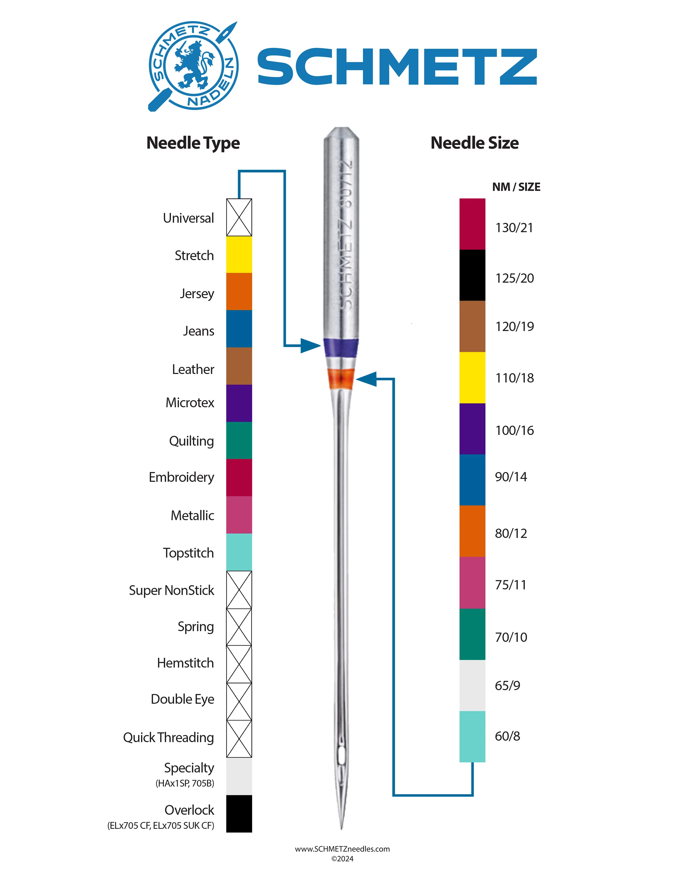

1. Hand Positioning and Movement
- Light hands: Guide the fabric along the intended path lightly, but let the feed dogs do the work of moving it forward.
- Be Smooth: Ensure that all movements are smooth, both when guiding the fabric in a straight line and when sewing curves.
- Relax Your Shoulders: Keep your shoulders relaxed to avoid transferring tension into your hands, which can lead to jerky or uneven fabric handling.
2. Holding the Fabric
- Taut, Not Stretched: Keep the fabric flat and taut, but avoid stretching it, which can lead to distorted seams and puckering.
- Fingertips: Use your fingertips, not your palms, when guiding fabric through the machine for better control and sensitivity.
3. Pin Placement
Place pins perpendicular to the seam line, with the head facing outward. This makes it easier to remove pins as you sew and helps keep fabric layers aligned correctly.
4. Where to Look
- Focus Ahead of the Needle: Look slightly ahead of the needle to maintain a straight line and spot issues before they reach the needle.
- Peripheral Vision: Use your peripheral vision to monitor both the fabric’s edge and seam allowance for consistent stitching.
- Markers and Guides: Use seam guides on your sewing machine’s throat plate to keep seam allowances even.
5. General Tips
- Manage the Space: Ensure your sewing area has enough space. If the fabric is falling off the table, or bunching up too much, it will cause problems.
- Don't let fabric bully you: Larger or heavier fabrics can easily drag or pull, especially if space is limited or they build up in the throat. This will pull your sewing off line. Manage the fabric carefully and only sew when it is under control
- Practice on Fabric Scraps: Before starting a project, practice on fabric scraps of the same material to adjust for sewing, seaming, and thread tension.
What is Backstitching?
Backstitching is essentially about reinforcing the start and end of a seam by sewing a few stitches forward, then reversing (sewing backward) over those stitches, and then sewing forward again along the seam line.
How to Backstitch
- Start Sewing: Begin by sewing a few stitches in the forward direction.
- Reverse: Press the reverse lever or button on your sewing machine to sew a few stitches backward, overlapping the initial stitches.
- Resume Forward Sewing: Release the reverse control and continue sewing forward along your seam as usual.
- Repeat at the End: When you reach the end of your seam, backstitch again by sewing a few stitches backward and then forward to lock the end of the seam in place.
By doing this, you're effectively knotting the thread at both the beginning and end of your stitching line, which helps to secure the seam and prevent the threads from unraveling. Backstitching is a quick and simple way to add durability to your sewing projects.
Why Backstitching Eliminates the Need for Knots
- Securing the Thread: Backstitching locks the threads in place at the start and end of your seam by overlapping the stitches. This overlap acts like a knot, holding the thread securely within the fabric.
- Clean Finish: Clipping the threads close to the fabric surface gives a neat and tidy finish without visible knots, which is especially desirable in professional and high-quality sewing projects.
- Sufficient Hold: For most fabrics and seams, the backstitching is strong enough to prevent unraveling, even with regular use and washing. This makes it unnecessary to tie additional knots.
How to Clip the Threads
After Backstitching: Once you've finished sewing and have backstitched at the beginning and end of your seam, simply raise the needle and presser foot, pull the fabric away from the machine slightly, and use a pair of scissors or thread snips to cut the threads close to the fabric.
Leave a Short Tail: It's a good practice to leave a very short tail (a few millimeters) instead of cutting the thread flush against the fabric. This prevents the thread from slipping back through the stitches if there is any tension.
Overall, as long as you've backstitched properly, the threads are secure, and you don't need to tie additional knots. This method saves time and ensures a professional, clean finish.
General Advice
Pressing vs. Ironing: Pressing is a key part of sewing garments and is distinct from ironing. Pressing uses an up-and-down motion to avoid distorting fabric, while ironing moves the iron back and forth. Pressing secures stitches and presses seam allowances for a more professional look.
Tools: The essential tools are a basic home iron and an ironing board. Optional but useful tools include a tailor's ham (or a rolled-up towel as a substitute) and a clapper (a wood block for maintaining flat seams).
Importance: Pressing is done throughout the garment-making process. Beginners often underestimate the time spent pressing, which is comparable to the time spent sewing.
Special Fabrics: For delicate fabrics or fabrics prone to shine, use a press cloth to protect the fabric from direct heat.
For more details on pressing techniques, watch this video tutorial.
Operations
1. Pressing a Straight Seam
- Press Flat: Place the fabric on the ironing board and use an up-and-down motion to press the seam allowance flat.
- Press Open: Push seam allowances apart with your fingers or a tool. Finger press them first before using the iron.
- Press Wrong Side: Press from the wrong side of the fabric using an up-and-down motion, adding steam if necessary.
- Press Right Side: Flip the fabric over and press from the right side. Use a press cloth for delicate fabrics.
- Optional: Use a clapper after steaming to keep seams flat and crisp, especially on natural fibers like wool.
2. Pressing a Curved Seam
- Press Flat: Place the fabric with the curved seam on the ironing board and press the seam flat.
- Clip Seam Allowances: Clip into the seam allowances at the most curved points to allow the fabric to lie flat.
- Use Tailor's Ham: Place the fabric over a tailor's ham or rolled towel. Adjust the position until the curve fits comfortably.
- Press Apart: Press seam allowances apart using your fingers first, then press with the iron.
- Press Right Side: Flip the fabric to the right side and press again over the ham to ensure a smooth curve.
- Check Clips: Ensure the clips stay in place while pressing to avoid fabric bunching.
Using a Clapper
A clapper is a tool used in sewing to help create sharp, crisp seams and creases. It is usually made from dense hardwood like oak or maple, which absorbs and retains heat and moisture effectively.
How to Use a Clapper
- Pressing with an Iron: After pressing a seam or crease with an iron, while the fabric is still hot and slightly damp from the steam, place the clapper on top of the seam.
- Applying Pressure: The weight of the clapper and the pressure applied by the sewist help to flatten the fabric further and set the seam or crease in place as it cools.
Benefits of Using a Clapper
- Sharper Seams and Creases: Using a clapper gives a professional, crisp finish to garments and other sewn items.
- Better Fabric Control: It helps prevent shifting or puckering, which is particularly useful with delicate or slippery fabrics.
TEX System
The TEX system is a universal measurement for thread thickness. TEX represents the mass (in grams) of 1000 meters of thread. The higher the TEX number, the thicker the thread. For example, TEX 40 is thicker than TEX 20.
Gutermann Thread Conversion
Gutermann often uses a "Ticket Number" to represent thread thickness. You can easily convert the Ticket Number into the TEX system using the formula below. For more details, refer to Gutermann's Thread Guide.
TEX = (3000 / Ticket Number)
| TEX | Ticket Number | Common Uses |
|---|---|---|
| 15 - 30 | 100 - 200 | Lightweight fabrics (silk, chiffon), lingerie, embroidery |
| 30 - 40 | 75 - 100 | General-purpose sewing (cotton, polyester), quilting, home décor |
| 40 - 50 | 60 - 80 | Heavy-duty sewing (denim, canvas), outdoor gear, bags |
| 60 - 90 | 30 - 50 | Extra heavy-duty (leather, vinyl), upholstery, industrial sewing |
Common Sewing Machine Needle Sizes and Uses
| Needle Size (European) | Needle Size (American) | Common Uses |
|---|---|---|
| 60/8 | 8 | Fine fabrics such as silk or organza |
| 70/10 | 10 | Lightweight fabrics such as cotton lawn or voile |
| 80/12 | 12 | Medium-weight fabrics such as cotton, polyester, linen |
| 90/14 | 14 | Heavy fabrics such as denim, canvas, or upholstery fabric |
| 100/16 | 16 | Very heavy fabrics such as thick upholstery or multiple layers of denim |
Schmetz Sewing Needle Color System
Schmetz has a color system to identify needle types and sizes. Click the image below to view the Schmetz Sewing Needle Color System:
Common Types of Needles
- Universal Needles: A general-purpose needle suitable for most woven and knit fabrics. Commonly used for everyday sewing tasks.
- Ballpoint Needles: Designed for sewing knit fabrics. The rounded tip allows the needle to pass between the fabric threads without damaging them.
- Jeans/Denim Needles: A stronger needle with a thicker shaft designed to handle heavy fabrics like denim and canvas.
- Stretch Needles: Similar to ballpoint needles but with a special eye and scarf to prevent skipped stitches when working with highly elastic fabrics.
- Quilting Needles: Made to sew through multiple layers of fabric and batting, with a slightly rounded point for precise stitching.
- Topstitching Needles: Features a larger eye and sharper point for handling thicker topstitching threads and for decorative stitching.
Below are printable templates to help you practice accurate sewing techniques. Click the links to download the templates:
First fact: The thimble is for pushing the needle through from behind, not protecting from pricking
Below links to hend sewing tutorials:
Fabric Shift
Definition: Fabric shift occurs when the top layer of fabric moves or slides relative to the bottom layer while sewing, causing misalignment of seams. This can result in one layer extending beyond the other, especially when working with different types of fabrics or layers like batting in quilting projects.
Possible Solutions:
- Use a Walking Foot: A walking foot helps feed both layers of fabric evenly, reducing the chances of fabric shift. It's particularly useful when sewing with multiple layers, or fabrics that tend to slip, like knits or quilting cottons.
- Pin Strategically: Pin the fabric at the beginning, middle, and end of the seam. Alternatively, pin perpendicular to the edge of the fabric to prevent shifting during sewing.
- Glue Stick Method: Applying a washable glue stick within the seam allowance can help hold layers together. Lightly press the fabrics with a dry iron to set the glue if needed. This method washes out easily and avoids fabric shifting without excessive pinning.
- Nesting Seams: Press seams in opposite directions before pinning, so they "lock" together when sewn. This method helps reduce movement, especially when piecing blocks for quilting.
- Check Your Machine’s Feed Dogs: Fabric near the feed dogs (the teeth that pull the fabric through) moves faster than the top layer. Ensure that you are guiding fabric evenly, and try adjusting how you feed it through the machine to maintain alignment.
Thread Nest
Definition: A jumbled ball of thread that builds up at start of line of stitches
Possible Solutions:
- See Vee Tanner video
- Add tension with finger: Place a finger on top of the threads when taking first couple of stitches so they don't get pulled back into the sewing area. Not enough to stop them moving completely, but just to add tension
- Start sewing further forward on fabric: Start sewing about 1cm over the edge of the fabric so it is well under the presser foot (you can then backstitch to the edge)
- Leader: Use a leader so the thread cannot be pulled in
Dimensions
The final dimensions of the pillowcase will be 49 cm wide and 60 cm long.
The initial cutting dimensions of the fabric will be 51 cm wide and 150 cm long.
Step-by-Step Instructions
1. Cutting the Fabric: Cut the fabric to a width of 51 cm (including seam allowance) and a length of 150 cm.
2. Sewing the End Hems: Roll over and iron each end of the fabric twice to create a 2.5 cm hem. Sew each hem with two rows of stitching as shown in the image below. You'll now have a piece roughly 140 cm x 51 cm.
3. Folding correctly to sew: Place the fabric on a flat surface with the outer side facing up. Grab the left edge and pull 60 cm of fabric across to the right. Now grab the right edge and fold it over the double layer you created so it forms a triple layer (this will be the pocket to cover the end of the pillow).
4. Sewing the Side Seams: Using a straight stitch, sew 1 cm seams along each side, then overlock (or overcast) along each side.
Visual Guide


Tips for Making Jeans
- Fabric Selection: Use denim around 14 oz for a professional look. Try selvage.de
- Pre-Wash Your Fabric: Pre-washing can help to prevent shrinkage (5-10%) and color bleeding. With raw denim, if you want to avoid pre-washing, account for shrinkage by adjusting your pattern (especially in length).
- Pocket Lining Material: Poplin (Popeline in german) or twill (see this recommended on sewing forums) is a good choice for durability - Cotton-poly is stronger than just cotton. Ensure the warp is running vertically for max strength (warp is the threads long the roll, weft are across). Old shirts with durable fabric are a possibility for pocket lining or waistband lining
Contrado.co.uk have a lot of fabrics (also EU site) or woven monkey is an option - Needle Selection: Use denim needles (Schmetz brand recommended) and switch to topstitching needles for thick thread, as they have a larger hole for easier threading and better topstitching.
- Topstitching Tips: Use a Topstitching Needle (Schmetz make these) which has a larger eye and may provide better results. Use thick thread in the needle but regular thread in the bobbin to avoid tension issues. Needle tension may need to go as high as 8-10 for balanced topstitching.
- Hump Jumper: To sew over thick or uneven layers (like belt loops or crotch seams), use a hump jumper to stop the foot getting stuck. Make a few of different thicknesses, by folding and sewing multiple layers of fabric together - see t his video showing hump jumper
- Press Template for Pockets and waistband: Create a press template from card to shape pocket edges sharply when ironing hems. This ensures clean, professional-looking back pockets. Haven't seen this but can probably uses something similar when pressing waistband hems. See this video
- Fly Template: Make a fly template to help sewing flw from the frontSee this video
- Edge Guide Presser Foot: An edge guide presser foot, which has a small blade or slot, is invaluable for achieving straight and even topstitching. By aligning the blade with the fabric edge, you can easily maintain an even distance from the edge
- Avoid Bulky Backstitching: Backstitching with heavy topstitching thread can create big bumps. Tie thread ends instead
- Baste or tape the waistband: You can baste or use water-soluble double-sided tape (e.g. Prym Wonder Tape) on the inner waistband to keep it in place when topstitching.
- Interfacing: Interfacing is useful, especially on the waistband and fly. See this video from The Last Stitch
Overview
- Overview from The Last Stitch including denim choice, sewing order, needles and press templates
Step Details
- Full Video Tutorial List from The Last Stitch, available here
- Front pocket: The Last Stitch. Lots of really good details and tips Video
- Hand sewn button holes: Video by Elegancelite, Tutorial by Maurice Sedwell
- Fly details: The Last Stitch Video
Small Video Tips
- Hammer seams to ease sewing: Video
- Parallel top stitching seams: Video
- Bar Tacks:Video
- Basting Stitch: Video
Order of Sewing

- Front Pockets: Do as much detail work as possible before sewing pieces together. This includes sewing the front pockets first.
- Fly: After the front pockets, attach the zipper to the front pieces while they are still flat.
- Sew Yoke to the Back Pieces: Move to the back pieces and sew the yoke before continuing with other back details.
- Crotch Seams: After completing the front and back detail work, sew the crotch seams.
- Back Pockets: Attach the back pockets after sewing the crotch seams.
- Inseams: Sew the inseams, starting from the hem of one leg and continuing through to the hem of the other leg.
- Outer Seams: Sew the outer seams of the legs from top to bottom.
- Waistband: Attach the waistband
- Belt Loops: Add belt loops
- Hem the Legs: